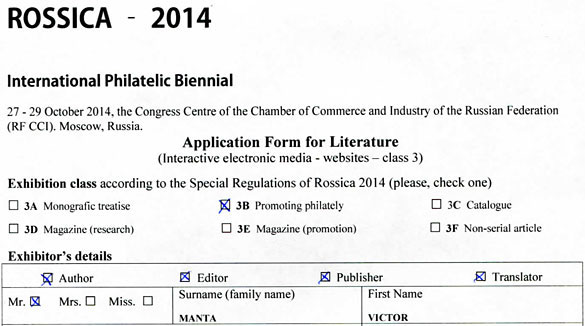
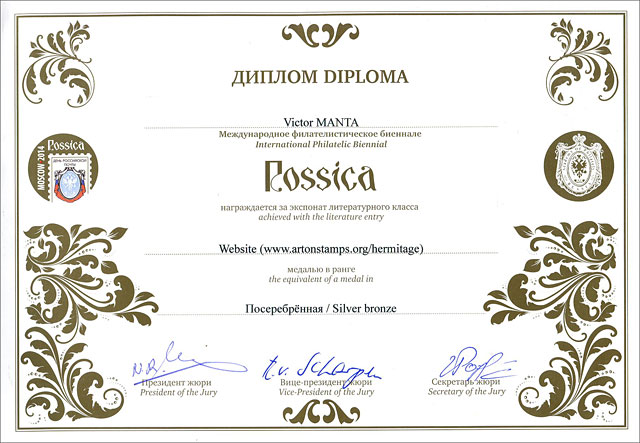
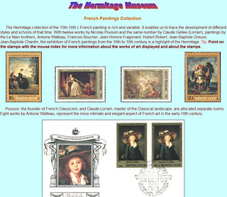
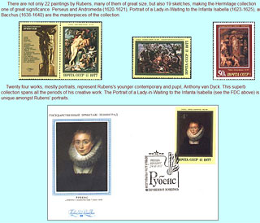
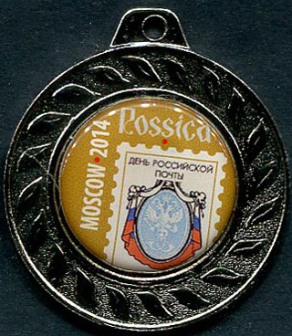
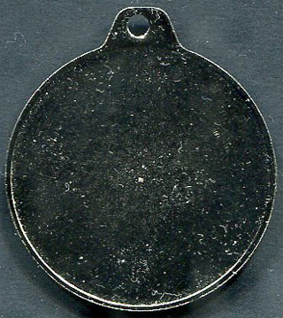
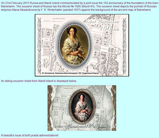

Rossica 2014 - A Weird Competition of Websites
← Back to Websites Competitions

|
Rossica 2014 - A Weird Competition of Websites
Victor Manta, PWO
Introduction
The Philatelic Webmasters Organization (PWO) has been created in order to promote, support and develop philately through philatelic webmastering. Its members regularly participated in all websites competitions, which started in the year 1999.
Continuing this tradition, I participated in Rossica 2014, which was opened to all members of the International Association of Philatelic Journalists (AIJP), as a (former) member of this association.
After an interruption of ten years, the websites competitions restarted at IPHLA 2012. The then organizer was AIJP and its president Mr. W. Maassen. See my article about it: WAS IPHLA - 2012 THE LAST MAJOR WEBSITES COMPETITION? by following the link: http://www.pwmo.org/IPHLA/13-iphla-last-competition.htm .
The IPHLA - 2012 exhibition was not the last one, as it was feared, because a new one followed in 2014, with a limited access to it (see Appendix 3, Art. 5.1). Please read below my report from this exhibition.
The Organization
My Application for Participation
As all AIJP members, I was invited to Rossica - 2014 by an e-mail sent on May 4, 2014 (see Appendix 1). I applied for participation on May 5, 2014, the day after I received the invitation. On May 7, 2014 I received a confirmation from the AIJP president, Mr. W. Maassen (see Appendix 2). Because he explicitly wrote: We will notify you about everything else at the given time, I waited calmly for further instructions.

Because I heard nothing until the end of September (that means five months of wait, and one month before the start of the exhibition), I asked Mr. Rainer von Scharpen, AIJP Secretary General, where should I pay my participation fee. After an exchange of e-mails, I could persuade him to accept the payment by PayPal, as I did two years ago when transferring the IPHLA 2012 participation fee and when paying, year after year, the fees due to AIJP.
The Long Awards Sending Story
Accordingly to Special Regulations, Art. 10 Awards (APPENDIX 3), I was entitles to receive the ROSSICA-2014 commemorative medal, a Certificate of Participation and the ROSSICA - 2014 competitive medal. I politely waited for one and a half month (till mid December 2014) and then asked Mr. R. von Scharpen, my former AIJP colleague, and AIJP organizer of the exhibition, what happened with my awards. I learned from him that he actually cared for the German participants only and that I could directly contact the exhibition organizers from Russia. A not really friendly answer, and big surprise!
As instructed, I contacted Mr. Igor Rodin, General Commissioner, who sent me and my question to Mr. Andrey Strygin, General Coordinator. Both were members of the OC of Rossica - 2014. From their short exchange of e-mail messages, in Russian, that I received too (?), I learned that Mr. Strygin didn't have my postal address and didn't know how to send the medal. Please note that he mentioned only one, and not two medals, as they are foreseen by Special Regulations, Art. 10 Awards, APPENDIX 3. This is a good indication of the fact that they never took into consideration the sending of awards and actually never did it .
I mention that I know that the German participants received quite fast one medal and the certificate by mail, from Mr. R. von Scharpen, who personally participated in the exhibition and who brought those awards and certificates to Germany.
Making a long story short, after almost three month of waiting I received one of the two medals and the certificate. I show them in this article, that I updated on January 20, 2015.

The Regulations and their Workarounds
From the AIJP Invitation I have learned that: The exhibition is divided into two parts: a non-competetive philatelic section and an competetive international literature exhibition modelled after the regulations which governed IPHLA 2012 Mainz. (APPENDIX 1)
The word modelled sounded very intriguing to me (not because of the typo) but I was quite busy then, so I left the matter unchecked until I started writing this article.
At IPHLA 2012 the jury used for the evaluation of websites the newer additions to the Exhibition Regulation (Ausstellungsordnung), elaborated by the Federation of German Philatelic Societies (BDPh). The source (look towards the end of the file, BDPh - Ausstellungsordnung für Literatur - AOL) is: http://www.bdph.de/fileadmin/Image_Archive/PDF/Downloadbereich/AO_2010_-_Stand_18-7-2012.pdf
As we know it, it was the AIJP who organized this exhibition.From this Regulation the organizers of Rossica - 2014 extracted excerpts for their own Special Regulations for ROSSICA - 2014 (APPENDIX 3). This part was important because it included the philatelic websites! It seems that the organizers could not take over the other provisions of the German Regulation (for example those concerned with the judging of exhibits), for the reason they were created for exhibitions that should be organized in Germany. I have all reasons to think that this transfer from the German Regulation to the Rossica - 2014 ones was the contribution of AIJP (the patronizing organization) to the Rossica - 2014 exhibition.
For judging the websites exhibits, the organizers found a workaround that consisted in the usage of the good old Special Regulations for the Evaluation of Philatelic Literature Exhibits at FIP Exhibitions (SREV APPENDIX 4).
One problem with SREV is that they were not developed for the judging of websites, a category that still does not exists for the FIP. This is obvious from SREV, Points (APPENDIX 4), a point system that is not appropriate for the judging of websites. We should never forget the words of the regretted FIP judge Charles J. Peterson, who was the father of the first websites evaluations (1999 - 2002): It would be a mistake to attempt to evaluate Internet literature against exactly the same benchmarks as printed literature. But this was exactly what Rossica - 2014 jury did!
Another problem is that Rossica - 2014 was not patronized by the FIP, which raises the obvious question how could the organizers use these FIP regulations at all?

The Jury and Its Communication
Usually I learn about the jury members from the exhibition certificates but this was not possible this time because I received the Rossica-2014 participation certificate very late.
Fortunately, on December 14, 2014 (late, late ) I learned from Mr. R. von Scharpen the names of the members of the jury. Over a month later I learned also more from the exhibition's brochure:
- Nicos Rangos, Cyprus - a Board member of the European Academy of Philately (AEP)
- Igor Rodin, Russia - Chairman of the FIP Section for Astrophilately
- Rainer von Scharpen, Germany - Secretary General of the International Association of the Philatelic Journalists (AIJP)
Please notice the lack of transparency in what concerns the composition of the jury and the qualification/experience of its members, information that should be published on the Rossica- 2014 website but it was not.
A fast search on the Web provided following results. Mr. Nicos Rangos is/was a FIP, AEP, FEPA official. He is known for his interests in maximaphily. Mr. Rainer von Sharpen is the current Secretary General of AIJP. Mr. Igor Rodin is known as Space exhibitions organizer. No one is mentioned as having ever competed with or judged philatelic websites.
To learn more, I sent by e-mail interview sheets to Mr. N. Rangos (APPENDIX 5) and to Mr. R. von Scharpen (a similar interview sheet) and I invited them to fill them in and to return them to me. Mr. Rangos completely ignored my request. Mr. Sharpen answered that I sent my request too late, a mockery that did not take into account that he was the primary cause of delay.

The Awards
From the Special Regulations for ROSSICA - 2014, Art. 10 Awards (APPENDIX 3) we learn that the participants in the Literary Class will receive two medals and a certificate.
I knew in advance from some participants from Germany that they received only one medal. For this reason I urged Mr. Strygin to send me both medals, and also to send in advance their scans. I show below both faces of this curious medal. After Mr. Strygin, who sent me in advance a scan of it, this is the ROSSICA-2014 competitive medal. In accordance with SREV - Rule 9 (APPENDIX 4) "Medals in the literature class will bear the word "Literature" either abbreviated or in full."
Obviously, the world "Litterature" or its abbreviation are not present, which breaks the FIP rules and makes this medal worthless! The fact that the other promissed medal wasn't sent at all to participants adds insult to injury.


The Fees
The participation fee was relatively small but, after reading the SREV, one can ask why did the organizers require a fee at all?
From the Special Regulations for ROSSICA - 2014 (APPENDIX 3) we learn:
Article 12 Participation Fees
12.1 There is no fee for the exhibition frames.
12.2 The participation fee for Literature (Class 1, Class 2, Class 3) is Euro € 10 per exhibit.
This however is contradicted by SREV (APPENDIX 4):
Rule 6: The entry fee for a literature exhibit shall be equivalent to the price of one frame in the general competition class of the same exhibition.
The solution chosen by the organizers doesn't comply with SREV but it is a more lucrative one.

The Conclusion
It is such a pity that the Rossica - 2014 websites competition, instead of getting better after the relatively recent IPHLA 2012 experiment, went in the opposite direction. It will be remembered as using a weird mixture of incompatible and inadequate rules, and had an OC that didn't fulfill his obligations and promises. For these reasons Rossica - 2014 cannot be recommended as an example to follow in the future.
Note: Some images on this page were taken from the minisite Hermitage Museum on Stamps that the author presented at Rossica - 2014.
http://www.artonstamps.org/hermitage/
APPENDIXES
APPENDIX 1 - AIJP Invitation (May 4, 2014. Excerpts)
Dear AIJP members,
the AIJP, the World Association of Philatelic Authors and Journalists, is one of the two partners who have given their patronage to ROSSICA 2014 to promote this international exhibition which will take place in Moscow October 27 to 29, 2014. Members of European Academies as well as members of the AIJP are honoured by being invited to exhibit in Russia 's capital this autumn.
The exhibition is divided into two parts: a non-competetive philatelic section and an competetive international literature exhibition modelled after the regulations which governed IPHLA 2012 Mainz. That means that next to printed literature, digital media and websites are admitted as well. (Emphasis added)
Personally we urge you quite sincerely to participate in this event by submitting a literature exhibit. We would be happy and grateful if the members of the AIJP were legions to participate in the exhibition in Moscow this autumn in a spirit of amity and comradeship. So: please join in! Hearty greetings
Wolfgang Maassen Rainer von Scharpen
President Secretary GeneralAPPENDIX 2 (E-mail confirmation, as of May 7, 2014. Free translation from German by VM)
Dear Mr. Manta,
thanks for the registration that we note down. We will notify you about everything else at the given time. (Emphasis added)
Yours sincerely,
Wolfgang Maassen
P residentAPPENDIX 3
Special Regulations for ROSSICA - 2014 (excerpts)
Article 5- Conditions of Participation and Allotment of Frames.
5.1 The members of European Academy of Philately (AEP) and the members of National Philatelic Academies as well as the members of International Association of Philatelic Journalists (AIJP) are invited to take part at ROSSICA 2014.
5.2 Entries regarded to all FIP Competitive Classes (in according to the General Regulations of the FIP for Exhibitions GREX) may be submitted.
Article 6 Exhibition Classes.
Electronic Media
Class 3: Interactive Electronic Media / Websites
Class 3A : Websites presenting the results of philatelic and postal history research.
Class 3B : Websites promoting philately and/or dealing with organizational issues in the field of philately and postal history or providing documentation of these matters.
Article 7 Evaluation of Philatelic Literature.
Evaluation of Philatelic Literature will be performed by the International Jury in according to GREX, the General Regulations of the FIP for the Evaluation of Competitive Exhibits at FIP Exhibitions (GREV) and Special Regulations for the Evaluation of Philatelic Literature Exhibits (SREV).
Article 10 Awards
10.1 Each exhibitor will be awarded with the ROSSICA-2014 commemorative medal and a Certificate of Participation. One exhibitor will get one medal and one Certificate in spite of the number of submitted exhibits.
The exhibitors of Literary Class will be awarded with the ROSSICA-2014 competitive medal. (Emphasis added)
Article 12 Participation Fees
12.1 There is no fee for the exhibition frames.
12.2 The participation fee for Literature (Class 1, Class 2, Class 3) is Euro € 10 per exhibit.
http://www.rossica.info/spage/no/Special_Regulations-2014/
APPENDIX 4 - SREV
Special Regulations for the Evaluation of Philatelic Literature Exhibits at FIP Exhibitions
Article 1: Competitive Exhibits
In accordance with Article 1.4 of the General Regulations of the FIP for the Evaluation of Competitive Exhibits at FIP Exhibitions (GREV), these Special Regulations have been developed to supplement those principles with regard to the Philatelic Literature. Also refer to Guidelines to Philatelic Literature Regulations.
Article 2: Competitive Exhibits
Philatelic literature includes all printed communications available to collectors related to postage stamps, postal history, and their collecting, and to any of the specialized fields connected therewith. (Emphasis added)
Rule 6:
The entry fee for a literature exhibit shall be equivalent to the price of one frame in the general competition class of the same exhibition.
Rule 9:
Medals in the literature class will bear the word "Literature" either abbreviated or in full.
Guidelines for Judging Philatelic Literature
Use of the Evaluation System
The use of a point system, together with appropriate "scoring sheets", can be helpful in reaching balanced and rational evaluations. However, it must be emphasized that such a system cannot be applied mechanically; the final point totals also must be looked at in terms of the overall quality of the exhibits.
Points
TREATMENT OF CONTENTS Authorship 40
How well is story identified & told?
- Evaluation of literary style, clarity
- Skill in communication
ORIGINALITY, SIGNIFICANCE, DEPTH OF RESEARCH Philatelic Aspect s 40
- Overall significance = global importance to philately
- Degree of original discoveries, research, analysis
- Comprehensive = depth & scope
- Understanding of subject
TECHNICAL MATTERS Editorial aspect 15
How well is work constructed?
- Title page, imprint, pagination, list of contents, use of footnotes
- Acknowledgements, bibliography, index & use of
- Illustrations & tables - captions, consistency in layout & text
PRESENTATION Publishing aspect 5
- Effect of binding, clarity of print, paper quality, page size
- Use of colour in illustrations
Rule 6:
The entry fee for a literature exhibit shall be equivalent to the price of one frame in the general competition class of the same exhibition.
Rule 9:
Medals in the literature class will bear the word "Literature" either abbreviated or in full.
http://www.f-i-p.ch/regulation/documents/LITSREVweb2013.pdf
APPENDIX 5
PWO - Interview with Mr. Nicos Rangos, President of the Jury at Rossica 2014, FIP
December 2014
How was it for you to judge philatelic websites, as compared to other kind of philatelic exhibits?
(please fill-in in the spaces provided here and below; delete this line)
Was your previous experience of judging philatelic material useful for judging the websites in this competition?
Which was the previous experience of jurors in judging the philatelic websites?
At IPHLA 2012 the judges used the set of regulations adopted by the BDPh, that include rules for judging philatelic websites but in this competition you used the FIP Special Regulations for the Evaluation of Philatelic Literature Exhibits (SREV) ?
Source: http://www.rossica.info/spage/no/Special_Regulations-2014/
As far as we know, SREV were not applicable to websites, and for this reason we would like to know if this means that the policy of FIP toward judging websites has changed.
Was it a good idea to mix out of order all Exhibition Classes (Art 6), i.e. Printed and Electronic Media, with all their Subclasses, as reflected in the final Palmares. The same question put differently: can be websites judged like any other philatelic exhibits?
Have you communicated with the exhibitors whose websites you judged, before scoring them? If your answer is affirmative, for which reasons and how often? Have you for example communicated the scoring sheets results to each participant?
I personally participated in Rossica 2014 with a minisite ( www.artonstamps.org/hermitage ) that states explicitly on its front page: The main reason of this presentation is to show how, by using philatelic material that is widely available, a stamp collector can put together a wonderful collection and create an attractive Web site. It was awarded with Silverbronze, which I don't challenge but to get more from this exhibition, would you please tell me how could I improve my minisite?
| Created:
Jan. 14, 2015. Revised:
Jan. 21, 2015. Copyright © 2015 by PWO and by Victor Manta, Switzerland All rights reserved worldwide. |